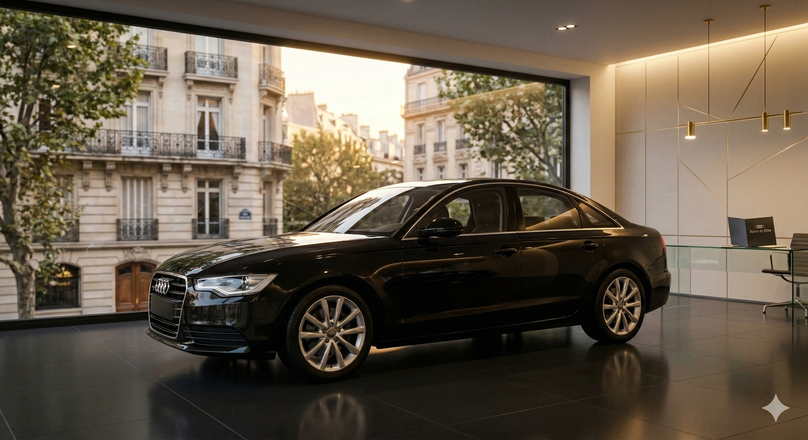
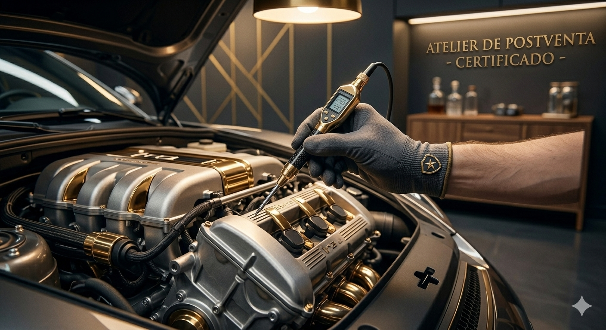

Nuestros servicios
En Autos de Elite, redefinimos la experiencia automotriz a través de un estándar de excelencia y exclusividad. Nuestro compromiso es acompañarlo en cada etapa, garantizando confianza y distinción en cada transacción.

Adquisición de Unidades Premium
Explore nuestra exclusiva selección de vehículos que definen el estándar del lujo automotriz. En Autos de Élite, no solo vendemos autos; entregamos piezas de ingeniería curadas bajo los más estrictos controles de calidad y sofisticación. Cada unidad en nuestro inventario está destinada a aquellos que no aceptan menos que la perfección.
Tasación y Gestión de Compra
Ofrecemos un proceso de adquisición de vehículos con la transparencia y el prestigio que su patrimonio merece. Si desea vender su unidad, nuestro equipo de expertos realiza una tasación técnica y comercial de alto nivel, garantizando una oferta justa y una gestión documental impecable para que su transición sea rápida y segura.

Service Oficial
Garantizamos la integridad de su vehículo a través de mantenimientos preventivos y correctivos bajo estándares internacionales. Solo utilizamos componentes genuinos para asegurar la longevidad y seguridad de su unidad.